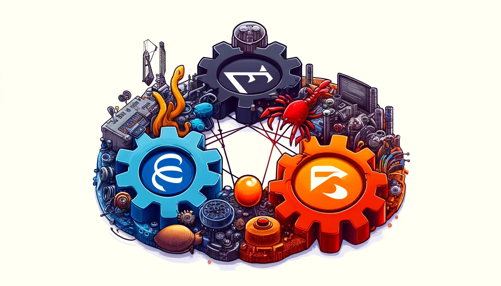

This tutorial will guide you through using Nix to simplify the workflow of incorporating Rust library as a dependency in your Haskell project via FFI. If you are new to Nix and Flakes, we recommend starting with the Nix Tutorial Series.
This isn’t solely restricted to Haskell and Rust, it can be used between any two languages that can establish a common ground to communicate, such as C.
The objective of this tutorial is to demonstrate calling a Rust function that returns Hello, from rust! from within a Haskell package. Let’s begin by setting up the Rust library.

Initialize Rust Project
Start by initializing a new Rust project using rust-nix-template:
git clone https://github.com/srid/rust-nix-template.git
cd rust-nix-template
Now, let’s run the project:
nix develop
just run
Create a Rust Library
The template we’ve initialized is a binary project, but we need a library project. The library should export a function callable from Haskell. For simplicity, let’s export a function named hello that returns a C-style string. To do so, create a new file named src/lib.rs with the following contents and git add src/lib.rs:
use std::ffi::CString;
use std::os::raw::c_char;
/// A function that returns "Hello, from rust!" as a C style string.
#[no_mangle]
pub extern "C" fn hello() -> *mut c_char {
let s = CString::new("Hello, from rust!").unwrap();
s.into_raw()
}
Now, the library builds, but we need the dynamic library files required for FFI. To achieve this, let’s add a crate-type to the Cargo.toml:
[lib]
crate-type = ["cdylib"]
After running cargo build, you should find a librust_nix_template.dylib
1
(if you are on macOS) or librust_nix_template.so (if you are on Linux) in the target/debug directory.
Initialize Haskell Project
Fetch cabal-install and ghc from the nixpkgs in flake registry and initialize a new Haskell project:
nix shell nixpkgs#ghc nixpkgs#cabal-install -c cabal -- init -n --exe -m --simple hello-haskell -d base --overwrite
Nixify Haskell Project
We will utilize haskell-flake to nixify the Haskell project. Add the following to ./hello-haskell/default.nix:
File:haskell-rust-ffi/hs/default.nix
{
perSystem = { config, pkgs, self', ... }: {
haskellProjects.default = {
projectRoot = ./.;
autoWire = [ "packages" "checks" "apps" ];
};
devShells.haskell = pkgs.mkShell {
name = "hello-haskell";
inputsFrom = [
config.haskellProjects.default.outputs.devShell
];
};
};
}
Additionally, add the following to flake.nix:
{
inputs.haskell-flake.url = "github:srid/haskell-flake";
outputs = inputs:
# Inside `mkFlake`
{
imports = [
inputs.haskell-flake.flakeModule
./hello-haskell
];
};
}
Stage the changes:
git add hello-haskell
Now, you can run nix run .#hello-haskell to build and execute the Haskell project.
Merge Rust and Haskell Development Environments
In the previous section, we created devShells.haskell. Let’s merge it with the Rust development environment in flake.nix:
{
# Inside devShells.default
inputsFrom = [
# ...
self'.devShells.haskell
];
}
Now, re-enter the shell, and you’ll have both Rust and Haskell development environments:
exit
nix develop
cd hello-haskell && cabal build
cd .. && cargo build
Add Rust Library as a Dependency
Just like any other dependency, you’ll first add it to your hello-haskell/hello-haskell.cabal file:
executable hello-haskell
-- ...
extra-libraries: rust_nix_templateTry building it:
cd hello-haskell && cabal build
You’ll likely encounter an error like this:
...
* Missing (or bad) C library: rust_nix_template
...
The easiest solution might seem to be export LIBRARY_PATH=../target/debug. However, this is not reproducible and would mean running an additional command to setup the prerequisite to build the Haskell package. Even worse if the Rust project is in a different repository.
Often, the easiest solution isn’t the simplest. Let’s use Nix to simplify this process.
When you use Nix, you set up all the prerequisites beforehand, which is why you’ll encounter an error when trying to re-enter the devShell without explicitly specifying where the Rust project is:
...
error: function 'anonymous lambda' called without required argument 'rust_nix_template'
...
To specify the Rust project as a dependency, we setup haskell-flake dependency overrides by editing hello-haskell/default.nix to:
{
# Inside haskellProjects.default
settings = {
rust_nix_template.custom = _: self'.packages.default;
};
}
This process eliminates the need for manual Rust project building as it’s wired as a prerequisite to the Haskell package.
Call Rust function from Haskell
Replace the contents of hello-haskell/app/Main.hs with:
File:haskell-rust-ffi/hs/Main.hs
{-# OPTIONS_GHC -Wno-unrecognised-pragmas #-}
{-# HLINT ignore "Use camelCase" #-}
module Main where
import Foreign.C.String (CString, peekCString)
-- | The `hello` function exported by the `rust_nix_template` library.
foreign import ccall "hello" hello_rust :: IO CString
-- | Call `hello_rust` and convert the result to a Haskell `String`.
hello_haskell :: IO String
hello_haskell = hello_rust >>= peekCString
main :: IO ()
main = hello_haskell >>= putStrLn
The implementation above is based on the Haskell FFI documentation. Now, run the Haskell project:
nix run .#hello-haskell
You should see the output Hello, from rust!.
If you are on macOS, the Haskell package will not run because dlopen will be looking for the .dylib file in the temporary build directory (/private/tmp/nix-build-rust-nix...). To fix this, you need to include fixDarwinDylibNames in flake.nix:
{
# Inside `perSystem.packages.default`
# ...
buildInputs = if pkgs.stdenv.isDarwin then [ pkgs.fixDarwinDylibNames ] else [ ];
postInstall = ''
${if pkgs.stdenv.isDarwin then "fixDarwinDylibNames" else ""}
'';
}
Problems with cabal repl
cabal repl doesn’t look for NIX_LDFLAGS to find the dynamic library, see why here. This can be worked around in hello-haskell/default.nix using:
{
# Inside `devShells.haskell`
shellHook = ''
export LIBRARY_PATH=${config.haskellProjects.default.outputs.finalPackages.rust_nix_template}/lib
'';
}
Re-enter the shell, and you’re set:
❯ cd hello-haskell && cabal repl
Build profile: -w ghc-9.4.8 -O1
In order, the following will be built (use -v for more details):
- hello-haskell-0.1.0.0 (exe:hello-haskell) (ephemeral targets)
Preprocessing executable 'hello-haskell' for hello-haskell-0.1.0.0..
GHCi, version 9.4.8: https://www.haskell.org/ghc/ :? for help
[1 of 2] Compiling Main ( app/Main.hs, interpreted )
Ok, one module loaded.
ghci> main
Hello, from rust!
ghci?
If you use ghci you will need to link the library manually: ghci -lrust_nix_template. See the documentation.
Template
You can find the template at https://github.com/shivaraj-bh/haskell-rust-ffi-template. This template also includes formatting setup with treefmt-nix and VSCode integration.